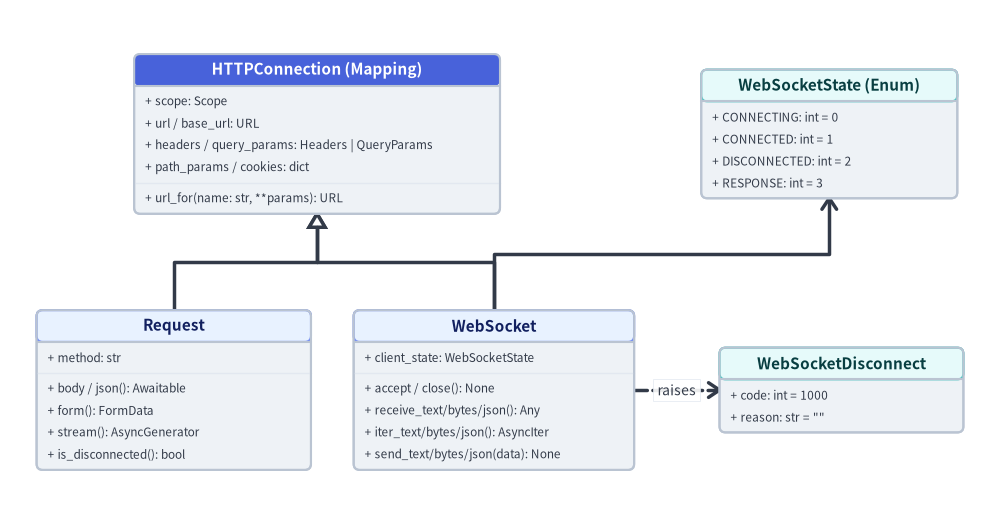

fastapi.requests & websockets
FastAPI exposes Starlette's ASGI connection primitives through fastapi.requests (Request, HTTPConnection) and fastapi.websockets (WebSocket, WebSocketDisconnect, WebSocketState). Both HTTP Request handlers and full-duplex WebSocket endpoints inherit from HTTPConnection, sharing uniform access to headers, query/path parameters, cookies, client addresses, and application state.

classRequest#
Represents an incoming HTTP request (from fastapi import Request or from fastapi.requests import Request). Injecting request: Request into a path operation or dependency grants direct access to unparsed headers, client network metadata, arbitrary request.state attributes, and streaming or buffered body readers without bypassing FastAPI's OpenAPI parameter validation on other arguments.
class Request(HTTPConnection[StateT]):
def __init__(
self,
scope: Scope,
receive: Receive = empty_receive,
send: Send = empty_send,
) -> None: ...
Attributes#
| Attribute | Type | Description |
|---|---|---|
method |
str |
Uppercase HTTP verb from the ASGI scope (e.g. "GET", "POST"). |
url |
starlette.datastructures.URL |
Parsed request URL exposing .scheme, .netloc, .path, .query, and .port. |
base_url |
starlette.datastructures.URL |
Root application URL respecting ASGI root_path. |
headers |
starlette.datastructures.Headers |
Case-insensitive, immutable multi-dict of HTTP request headers. |
query_params |
starlette.datastructures.QueryParams |
Immutable multi-dict of parsed URL query string parameters (.get(), .getlist()). |
path_params |
dict[str, Any] |
Dictionary of matched route path parameters extracted from the URL path. |
cookies |
dict[str, str] |
Dictionary of cookies parsed from incoming Cookie headers. |
client |
Address | None |
Named tuple Address(host: str, port: int) of the remote peer, or None if unavailable. |
app |
FastAPI | Any |
Reference to the active ASGI FastAPI application instance (scope["app"]). |
state |
starlette.datastructures.State |
Per-request namespace object for sharing arbitrary middleware/dependency state (request.state.request_id). |
scope |
Scope (MutableMapping[str, Any]) |
Raw ASGI HTTP connection scope dictionary. |
Async & Sync Methods#
| Method | Signature | Description |
|---|---|---|
body() |
async def body(self) -> bytes |
Reads and caches the complete raw HTTP request body as bytes. |
json() |
async def json(self) -> Any |
Reads await self.body() and parses it with json.loads(). |
form() |
def form(self, *, max_files: int | float = 1000, max_fields: int | float = 1000, max_part_size: int = 1048576) -> AwaitableOrContextManager[FormData] |
Parses multipart/form-data or application/x-www-form-urlencoded fields (await request.form() or async with request.form() as form:). |
stream() |
def stream(self) -> AsyncGenerator[bytes, None] |
Yields raw body chunks via async for chunk in request.stream(): without buffering the entire payload in memory. |
is_disconnected() |
async def is_disconnected(self) -> bool |
Polls the ASGI receive channel non-blockingly to check whether the client has closed the connection. |
close() |
async def close(self) -> None |
Closes any temporary UploadFile handles opened during request.form() parsing. |
url_for() |
def url_for(self, name: str, /, **path_params: Any) -> URL |
Builds an absolute URL for the named route (name) with substituted path_params. |
Example#
from fastapi import FastAPI, Request
from fastapi.testclient import TestClient
app = FastAPI()
@app.post("/ingest/{source}")
async def ingest_payload(source: str, request: Request) -> dict[str, object]:
request.state.trace = request.headers.get("x-trace-id", "none")
chunks = [chunk async for chunk in request.stream() if chunk]
return {
"method": request.method,
"path": request.url.path,
"path_param": request.path_params["source"],
"query_tag": request.query_params.get("tag"),
"trace": request.state.trace,
"byte_len": sum(len(c) for c in chunks),
"disconnected": await request.is_disconnected(),
}
client = TestClient(app)
res = client.post(
"/ingest/sensor-a?tag=v2",
content=b"raw-telemetry-bytes",
headers={"X-Trace-Id": "tr-100"},
)
assert res.status_code == 200
assert res.json() == {
"method": "POST",
"path": "/ingest/sensor-a",
"path_param": "sensor-a",
"query_tag": "v2",
"trace": "tr-100",
"byte_len": 19,
"disconnected": False,
}
classHTTPConnection#
Shared base class (from fastapi.requests import HTTPConnection) for both Request (scope["type"] == "http") and WebSocket (scope["type"] == "websocket"), implementing Mapping[str, Any] over the underlying ASGI scope. Annotating a FastAPI dependency parameter as conn: HTTPConnection allows the exact same dependency callable to run on both HTTP endpoints and WebSocket routes.
class HTTPConnection(Mapping[str, Any], Generic[StateT]):
scope: Scope
def __init__(
self,
scope: Scope,
receive: Receive | None = None,
) -> None: ...
Shared Interface#
| Member | Kind | Return Type | Description |
|---|---|---|---|
scope |
Attribute | Scope |
Underlying ASGI scope (scope["type"] is "http" or "websocket"). |
app, url, base_url |
Properties | Any, URL, URL |
Active ASGI application, full connection URL, and root base URL. |
headers, query_params, cookies |
Properties | Headers, QueryParams, dict[str, str] |
Connection headers, query parameters, and parsed cookies available during both HTTP requests and WebSocket handshakes. |
path_params, client, state |
Properties | dict[str, Any], Address | None, State |
Route parameters, client (host, port), and mutable connection state. |
session, auth, user |
Properties | dict[str, Any], Any, Any |
Populated when Starlette SessionMiddleware or AuthenticationMiddleware is installed. |
url_for(name, **path_params) |
Method | URL |
Reverses a named route into an absolute URL. |
Example#
from typing import Annotated
from fastapi import Depends, FastAPI, WebSocket
from fastapi.requests import HTTPConnection
from fastapi.testclient import TestClient
app = FastAPI()
def extract_tenant(conn: HTTPConnection) -> str:
return conn.headers.get("x-tenant-id", "public")
@app.get("/whoami")
def http_whoami(tenant: Annotated[str, Depends(extract_tenant)]) -> dict[str, str]:
return {"protocol": "http", "tenant": tenant}
@app.websocket("/ws/whoami")
async def ws_whoami(
websocket: WebSocket,
tenant: Annotated[str, Depends(extract_tenant)],
) -> None:
await websocket.accept()
await websocket.send_json({"protocol": "websocket", "tenant": tenant})
await websocket.close()
client = TestClient(app)
assert client.get("/whoami", headers={"X-Tenant-Id": "acme"}).json() == {
"protocol": "http",
"tenant": "acme",
}
with client.websocket_connect("/ws/whoami", headers={"X-Tenant-Id": "acme"}) as ws:
assert ws.receive_json() == {"protocol": "websocket", "tenant": "acme"}
classWebSocket#
Represents a bidirectional ASGI WebSocket connection (from fastapi import WebSocket or from fastapi.websockets import WebSocket). Inherits all handshake metadata properties from HTTPConnection and provides coroutine methods for accepting connections, receiving/iterating text, binary, or JSON frames, sending frames, and closing the socket.
class WebSocket(HTTPConnection[StateT]):
client_state: WebSocketState
application_state: WebSocketState
def __init__(self, scope: Scope, receive: Receive, send: Send) -> None: ...
Lifecycle Attributes & Methods#
| Member | Signature | Description |
|---|---|---|
client_state / application_state |
WebSocketState |
Tracks client-side and server-side ASGI WebSocket state transitions. |
accept() |
async def accept(self, subprotocol: str | None = None, headers: Iterable[tuple[bytes, bytes]] | None = None) -> None |
Completes the WebSocket handshake and transitions application_state to CONNECTED. |
receive_text() |
async def receive_text(self) -> str |
Awaits the next UTF-8 text frame; raises WebSocketDisconnect if the peer disconnects. |
receive_bytes() |
async def receive_bytes(self) -> bytes |
Awaits the next binary frame; raises WebSocketDisconnect on disconnect. |
receive_json() |
async def receive_json(self, mode: str = "text") -> Any |
Awaits a "text" or "binary" frame and deserializes JSON. |
iter_text() |
def iter_text(self) -> AsyncIterator[str] |
Async iterator yielding text messages until WebSocketDisconnect occurs cleanly. |
iter_bytes() |
def iter_bytes(self) -> AsyncIterator[bytes] |
Async iterator yielding binary frames until WebSocketDisconnect occurs cleanly. |
iter_json() |
def iter_json(self) -> AsyncIterator[Any] |
Async iterator yielding decoded JSON messages until WebSocketDisconnect occurs cleanly. |
send_text() |
async def send_text(self, data: str) -> None |
Sends a UTF-8 text WebSocket frame. |
send_bytes() |
async def send_bytes(self, data: bytes) -> None |
Sends a binary WebSocket frame. |
send_json() |
async def send_json(self, data: Any, mode: str = "text") -> None |
Serializes data to compact UTF-8 JSON and sends it over a "text" or "binary" frame. |
close() |
async def close(self, code: int = 1000, reason: str | None = None) -> None |
Sends a websocket.close frame with RFC 6455 status code and optional reason. |
Example#
from fastapi import FastAPI, WebSocket
from fastapi.testclient import TestClient
app = FastAPI()
@app.websocket("/ws/echo/{channel}")
async def websocket_echo(websocket: WebSocket, channel: str) -> None:
await websocket.accept(subprotocol="json.v1")
first_payload = await websocket.receive_json()
await websocket.send_json({"channel": channel, "echo": first_payload})
async for line in websocket.iter_text():
await websocket.send_text(f"{channel}:{line}")
client = TestClient(app)
with client.websocket_connect("/ws/echo/alerts", subprotocols=["json.v1"]) as ws:
ws.send_json({"seq": 1})
assert ws.receive_json() == {"channel": "alerts", "echo": {"seq": 1}}
ws.send_text("ping")
assert ws.receive_text() == "alerts:ping"
classWebSocketDisconnect#
Exception raised by receive_text(), receive_bytes(), and receive_json() when the client closes the WebSocket connection (and caught internally by iter_text(), iter_bytes(), and iter_json()). Imported via from fastapi import WebSocketDisconnect or from fastapi.websockets import WebSocketDisconnect.
class WebSocketDisconnect(Exception):
code: int
reason: str
def __init__(
self,
code: int = 1000,
reason: str | None = None,
) -> None: ...
Attributes#
| Attribute | Type | Default | Description |
|---|---|---|---|
code |
int |
1000 |
RFC 6455 WebSocket close status code (e.g. 1000 Normal Closure, 1001 Going Away, 1008 Policy Violation). |
reason |
str |
"" |
Human-readable disconnect reason string (reason or "" when None is passed). |
Example#
from fastapi import FastAPI, WebSocket, WebSocketDisconnect
from fastapi.testclient import TestClient
app = FastAPI()
disconnect_log: list[tuple[int, str]] = []
@app.websocket("/ws/room")
async def room_socket(websocket: WebSocket) -> None:
await websocket.accept()
try:
while True:
msg = await websocket.receive_text()
await websocket.send_text(msg.upper())
except WebSocketDisconnect as exc:
disconnect_log.append((exc.code, exc.reason))
client = TestClient(app)
with client.websocket_connect("/ws/room") as ws:
ws.send_text("hello")
assert ws.receive_text() == "HELLO"
ws.close(code=1001, reason="client navigating away")
assert disconnect_log[0][0] == 1001
enumWebSocketState#
enum.Enum tracking the ASGI lifecycle state of websocket.client_state and websocket.application_state. Imported from fastapi.websockets.WebSocketState.
class WebSocketState(enum.Enum):
CONNECTING = 0
CONNECTED = 1
DISCONNECTED = 2
RESPONSE = 3
Enum Members#
| Member | Value | Description |
|---|---|---|
CONNECTING |
0 |
Initial handshake state before websocket.connect / websocket.accept completes. |
CONNECTED |
1 |
Active full-duplex framing state after handshake acceptance. |
DISCONNECTED |
2 |
Terminal closed state after websocket.disconnect or websocket.close. |
RESPONSE |
3 |
HTTP denial response streaming state (send_denial_response) prior to final disconnect. |
Example#
from fastapi import FastAPI, WebSocket
from fastapi.testclient import TestClient
from fastapi.websockets import WebSocketState
app = FastAPI()
observed_states: list[WebSocketState] = []
@app.websocket("/ws/state")
async def inspect_ws_state(websocket: WebSocket) -> None:
observed_states.append(websocket.application_state)
await websocket.accept()
observed_states.append(websocket.application_state)
await websocket.send_text(websocket.client_state.name)
await websocket.close()
observed_states.append(websocket.application_state)
client = TestClient(app)
with client.websocket_connect("/ws/state") as ws:
assert ws.receive_text() == "CONNECTED"
assert observed_states == [
WebSocketState.CONNECTING,
WebSocketState.CONNECTED,
WebSocketState.DISCONNECTED,
]